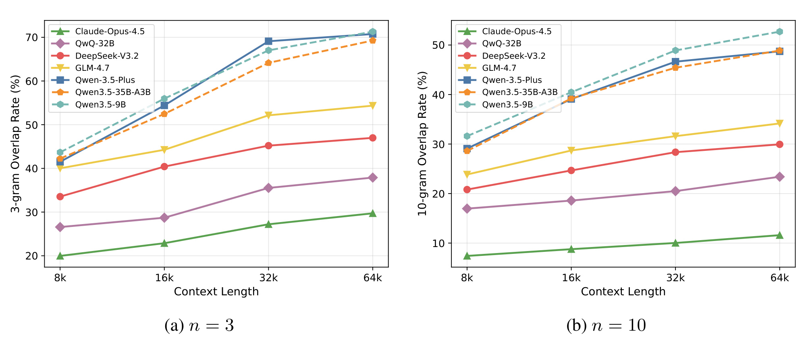
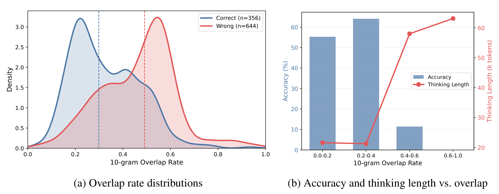
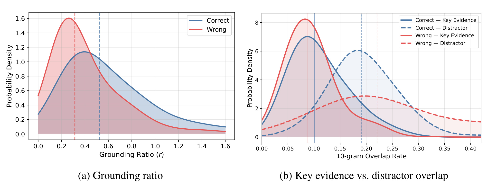
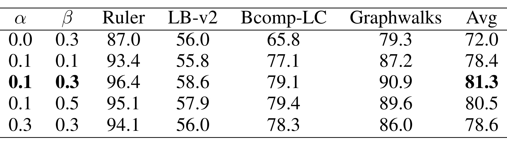
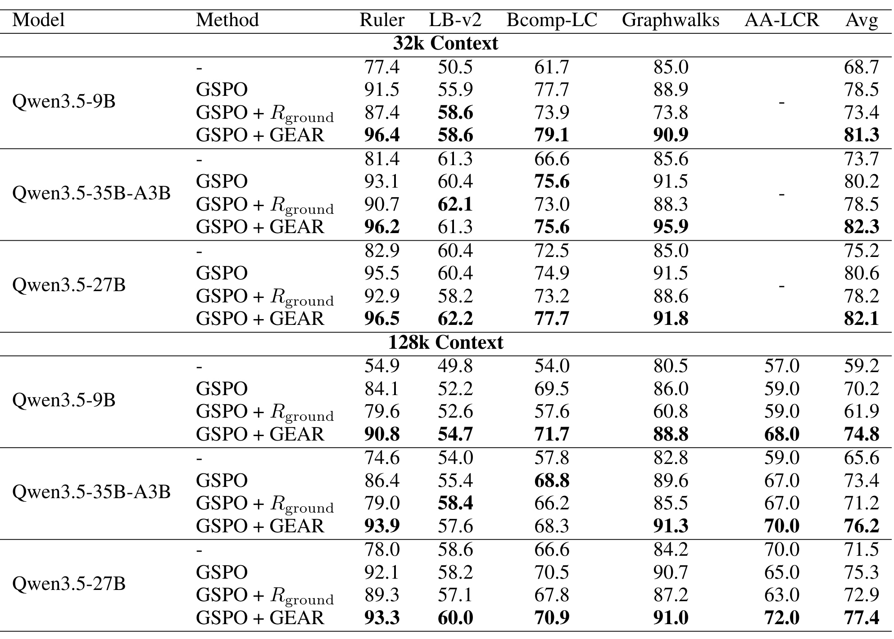
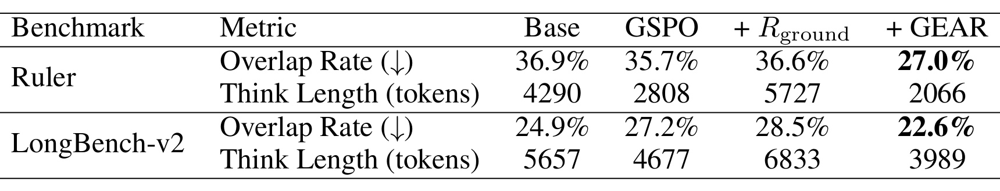
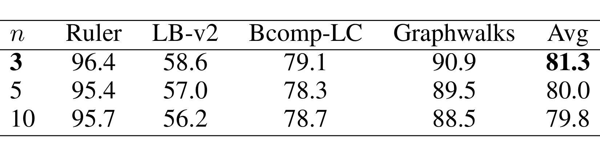
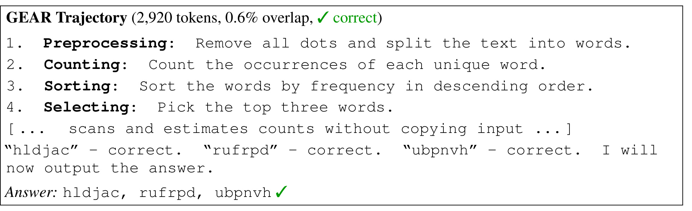
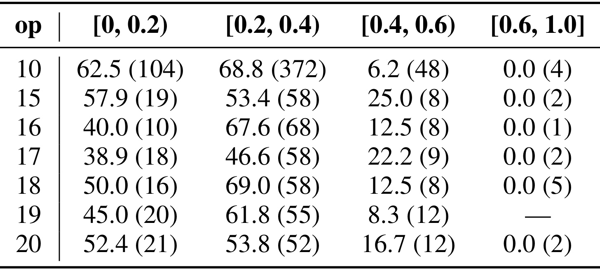

Copy Less, Ground More：用证据感知强化学习克服长上下文推理中的重复抄录
这篇论文由 Lizhe Fang、Weizhou Shen、Tianyi Tang 与 Yisen Wang 合作完成，一作主机构为北京大学，合作机构包括阿里巴巴集团。论文于 2026 年 7 月 21 日公开，原文入口为 arXiv:2607.19345。作者把长上下文显式推理中的一种常见现象从“输出太长”进一步定位为“把输入抄进思维链”，再以 GEAR（Grounding Evidence-Aware Reward）把关键证据重叠和干扰文本重叠分别纳入强化学习奖励。本轮未在论文入口或首页核验到独立代码仓库，因此复现仍需等待作者补充实现细节。
长上下文思维模型经常不加区分地把输入大段复制进推理轨迹；上下文越长，这种重复抄录越严重，不仅挤占推理 token，还与更低的答案准确率同时出现。真正的缺口不是模型完全不能引用输入，而是它没有稳定地区分任务所需的关键证据与无关干扰内容。
1. 背景和问题
长上下文评测正在从 needle-in-a-haystack 式检索，转向需要多步组合、状态保持和跨段证据整合的推理任务。显式思维模型看起来适合这类场景：它可以先生成中间推理，再给出答案；但推理空间也给了模型一种低成本的替代行为——直接重放输入，而不是压缩、选择并计算。论文把这种行为称为 repetitive copying。它不同于普通的措辞重复：被重复的是提示中的连续文本，而且在上下文增长时系统性上升。这样产生的长轨迹看似“读了很多”，实际上可能只是把注意到的片段搬进输出，既没有形成足够的证据筛选，也没有推进问题求解。
作者先在 GSM-Infinite 上做诊断。该基准把算术条件散布在大段程序生成文本里，每题需要 10-20 次顺序运算；生成器同时给出真正支持答案的字符位置，因此可以精确划分关键证据与干扰内容。研究覆盖 Claude-Opus-4.5、DeepSeek-V3.2、Qwen-3.5-Plus、GLM-4.7、QwQ-32B、Qwen3.5-35B-A3B 和 Qwen3.5-9B 七个显式推理模型，在 8k、16k、32k、64k 四档上下文上统计输出窗口是否在输入中出现。3-gram 用来观察总体复制量，10-gram 更严格地捕捉长连续片段，后者较少被偶然词汇重合干扰。

Figure 1 的两个面板共同说明“复制随长度加重”并非某个开源模型的孤例。左图中，8k 时各模型的 3-gram overlap 已在约 20.0%-43.7% 之间；到 64k，所有曲线继续上升，Qwen-3.5-Plus 达到约 70.8%，受影响最轻的 Claude 也从约 20.0% 上升到 29.7%。右图把窗口拉长到 10 个 token，趋势仍然一致，Qwen3.5-9B 在 64k 达到约 52.7%。因此高重叠不能简单解释成冠词、标点或短语偶合：大量十词连续窗口与输入完全一致，说明模型确实在转录长片段。更重要的是，七条曲线的相对高低虽不同，但斜率方向一致，表明上下文规模本身会放大这种失败模式；模型能力更强只能减轻，尚不能消除。
复制多是否一定有害，仍不能只靠 Figure 1 回答。模型引用输入中的正确条件，本来可能是合理的证据提取。作者于是固定 DeepSeek-V3.2、GSM-Infinite 64k 与 10-gram 指标，把正确和错误样本分开，并按 overlap 区间同时观察准确率和 thinking length。这个设计把问题从“存在多少复制”推进到“复制与任务表现怎样共同变化”，也暴露出 token 预算被无效转录耗尽的效率代价。

Figure 2 左侧的正确样本分布明显向低 overlap 区域偏移，错误样本则在更高 overlap 处形成主峰；两组中位数虚线也清楚分离。右侧按重叠率分桶后，0-0.2 与 0.2-0.4 两档准确率仍约为 55%-64%，平均推理长度约 21k token；进入 0.4-0.6 后，准确率骤降到约 11%，思维长度却上升到约 56k；0.6-1.0 桶的准确率降为 0，长度超过 58k。也就是说，更长轨迹没有换来更好答案，反而表现为“抄得越多、推得越久、答得越差”。这是一种很具体的预算错配：推理 token 被用于保存输入副本，而不是形成中间状态、执行运算或验证结论。
不过，相关性仍可能有替代解释，例如难题同时诱发更多复制和更多错误。论文的进一步突破是把输入拆成关键证据与干扰上下文，分别计算重叠，再考察二者的相对关系。高质量推理并不要求 overlap 接近零；如果复制主要发生在支持答案的片段，它可能是“带着证据推理”。危险的是对两类文本无差别重放，让无关内容淹没真正有用的条件。

Figure 3 左侧显示，正确样本的 grounding ratio 分布整体向右，意味着其关键证据重叠相对于干扰重叠更高。右侧进一步拆开来源：正确样本对 key evidence 的实线分布高于错误样本，同时对 distractor 的虚线分布更靠低值；错误样本则更容易从干扰区域复制。这个结果把“少抄一点”改写成了更可操作的训练目标——要奖励对关键证据的接触，同时单独惩罚对干扰上下文的转录。附录在六个其他模型上重复该分析，五个模型保持相同方向；Claude 因总体复制很低而使该比值辨别力变弱，是值得保留的例外。因而论文给出的根因更准确地说是 insufficient grounding，而不是所有形式的引用或复述都有害。
对推荐、搜索与 RAG 系统，这个问题同样具体。排序或问答模型拿到的长输入常混合用户历史、候选内容、检索片段、业务规则与噪声；模型若把“看见过”误当成“相关”，生成的解释或推理链会被高频但无决策价值的信息占据。论文的启发不是在线上思维链里机械降低复述率，而是要建立可观测的证据边界：哪些特征、文档、行为序列或规则真正支撑当前答案，哪些只是伴随上下文。没有这层划分，简单的长度惩罚可能同时压掉有用证据和无用复制。
2. 方法
2.1 从重叠率诊断到 GEAR 奖励
GEAR 的第一个基础是 overlap rate。设输入提示为 \(x\)，模型生成的推理轨迹为 \(y=(y_1,\ldots,y_m)\)，把输入中所有不同的 \(n\)-gram 收集为集合 \(\mathcal{N}_n(x)\)，再扫描输出中的每个长度为 \(n\) 的窗口：
符号解释：\(m\) 是推理轨迹的 token 数，\(n\) 是窗口长度，\(\mathbf{1}[\cdot]\) 为指示函数；当输出窗口在输入的 \(n\)-gram 集合里出现时计为 1。这个指标不试图判断语义等价，而是刻画“有多少输出位置落在输入的原样连续片段中”。诊断阶段同时使用 \(n=3\) 和 \(n=10\)：短窗口敏感但可能包含偶然重合，长窗口更适合确认连续转录。它的边界也很清楚：改写后的语义复制不会被统计，多次出现的常用短语可能抬高小 \(n\) 的数值，因此 overlap 只能作为行为代理，不能独立等同于 grounding 质量。
把 \(x\) 依据 support indices 分成关键证据 \(x_{\mathrm{key}}\) 与干扰区域 \(x_{\mathrm{dist}}\) 后，论文用下式衡量复制的选择性：
符号解释：分子是推理轨迹与关键证据的 10-gram 重叠，分母是与干扰上下文的 10-gram 重叠，\(r\) 越高表示复制更集中在真正支持答案的片段。该比值用于根因分析而非直接训练：当分母很小时数值会变得敏感，且不同 prompt 的证据长度比例不同，所以它更适合比较同一设置下的正确/错误分布，而不是跨数据集绝对排名。Figure 3 提供的经验事实是，正确样本通常具有更高的 \(r\)，从而为奖励的正负两项提供方向。
GEAR 最终把准确率、关键证据接触与干扰抄录组合成序列级奖励：
符号解释：\(R_{\mathrm{acc}}\in\{0,1\}\) 是答案是否正确的可验证奖励；\(\alpha\ge 0\) 控制 grounding reward，鼓励轨迹接触关键证据；\(\beta\ge 0\) 控制 distractor penalty，抑制无关文本重放。若某个 \(n\)-gram 同时出现在关键区和干扰区，作者把它从惩罚项排除，避免合法证据引用被误罚。核心并不是给 accuracy reward 追加一个“多引用证据”的奖励，而是用一正一负两股力迫使模型区分证据来源。只加正项时，最容易的套利方式是把整段输入都抄一遍，这既提高 key overlap，也提高 distractor overlap；只加负项时，模型则可能回避所有输入，连必要证据也不使用。Table 3 的单项和系数消融正是对这两个失败边界的验证。

Table 3 固定 Qwen3.5-9B 与 32k，改变 \(\alpha\)、\(\beta\)。默认 \(0.1/0.3\) 的平均分为 81.3，是五组中最高。仅使用 distractor penalty，即 \(\alpha=0,\beta=0.3\)，平均只有 72.0，说明“一律少引用输入”会连有用证据一起压制；把两项都设为 0.1 时为 78.4，惩罚不够强，无法抵消正项鼓励的广泛复制；保持 \(\alpha=0.1\)、把 \(\beta\) 增至 0.5 时为 80.5，略降但仍较稳；反过来把 \(\alpha\) 提到 0.3、\(\beta\) 维持 0.3 时降到 78.6。四个基准的行列共同支持同一判断：模型对偏强的 distractor 惩罚尚有容忍度，却对 grounding 正项占比过高更敏感。默认系数不是任意凑出的最好点，但当前网格较稀，尚不能说明它在其他数据、模型或证据长度比例下仍最优。
2.2 证据标注数据：程序生成与三阶段自然文本流水线
GEAR 需要知道哪些输入 span 支撑答案。GSM-Infinite 与 PhantomWiki 的生成器天然带 support indices：前者覆盖长文本中的数值链式运算，后者覆盖虚构百科中的多跳实体追踪。二者各提供 1,000 条训练样本，既让关键证据边界精确，也避免只学习一种推理形式。不过，真实文档通常没有现成 support 标注，作者因此反转了常见的“先出题、再找证据”流程：先指定证据，再限制出题只能依赖这块证据，使标签由构造过程自然得到。
自然文本流水线按论文顺序分三步。第一步分析和过滤文档，让模型判断其中主要包含事实、数值、因果还是比较关系，并据此选择适合的题型；产品列表、结构化数据等不适合问答的文档被剔除。第二步把文档切成每块 1,024 个字符，随机抽取 1-3 块作为 constraint context，其余部分成为 distractor context；生成模型只能基于这些约束块产生问题、1-3 条精确证据引文和简短答案。第三步由另一次回答过程只看 constraint context，独立重答问题；只有重答与参考答案一致的样本才被保留。答案被限制为数字或实体短语等单值形式，并排除 yes/no，以便准确率奖励自动计算。
这条流水线从 RedPajama-v2 构造 1,200 对 QA，与两种程序数据合计 3,200 条。它的优势是无需在整篇文档上做昂贵的人工证据搜索；同时，问题确实能由指定区域回答。风险在于“被指定为证据”不等于“文档中唯一的充分证据”：相同信息可能在干扰区以改写形式重复，生成模型也可能借助背景常识回答。独立重答过滤提高可答性，却不能完全证明 evidence span 的唯一性。对真实 RAG 或推荐日志迁移时，仍需增加语义去重、证据充分性检查和泄漏审计。
2.3 GSPO 训练配置与训练—推理边界
作者以 Qwen3.5-9B、Qwen3.5-27B 和 Qwen3.5-35B-A3B 三个尺度为基础模型，使用 Group Sequence Policy Optimization 做强化学习。训练数据上下文均匀分布在 16k-32k，最大提示长度 32k、最大生成长度 16k；训练 1 个 epoch，约 100 个 optimizer step，学习率 \(2\times10^{-6}\)，batch size 为 32，每题 rollout group size 为 8。奖励计算使用 \(n=3\)、\(\alpha=0.1\)、\(\beta=0.3\)。与诊断阶段采用 10-gram 不同，训练更需要密集反馈，3-gram 能让更多推理位置匹配到证据或干扰，从而提供更连续的组内奖励差异。
GEAR 是 reward shaping，不改模型结构，也不在推理阶段额外挂接检索器或验证器。训练时，每条 prompt 必须能映射到 \(x_{\mathrm{key}}\) 与 \(x_{\mathrm{dist}}\)，rollout 结束后计算三项奖励，再由 GSPO 在同组序列间形成更新信号；部署时只保留更新后的模型，接口和普通 Qwen3.5 相同。这个边界有明显工程价值：在线延迟不会因奖励计算增加，但数据生产端必须维护证据标注质量。也就是说，复杂度从推理服务迁移到离线数据与后训练，而不是凭空消失。
3. 实验结果
3.1 五个基准、三种尺度与 4 倍长度外推
主实验使用五个与训练集不重叠的长上下文基准：Ruler 测多 key、多 value 的长距离抽取；LongBench-v2 覆盖真实长文理解与推理；BrowseComp-LC 需要跨长文档综合浏览信息；GraphWalks 把多跳图路径写成文本并要求保持中间状态；AA-LCR 提供另一组长上下文推理任务。作者同时报告 32k 子集和 128k 全量结果；AA-LCR 的实例都超过 32k，因此只进入 128k。每个模型比较 Base、accuracy-only GSPO、GSPO 加 \(R_{\mathrm{ground}}\)、以及完整 GEAR 四种设置。

Table 1 需要按“模型尺度 × 上下文长度”而不是只看一个最高数值来读。完整 GEAR 在六个组合中均取得最高 Avg：9B 在 32k 从 GSPO 的 78.5 提升到 81.3，在 128k 从 70.2 提升到 74.8；35B-A3B 分别从 80.2 到 82.3、73.4 到 76.2；27B 分别从 80.6 到 82.1、75.3 到 77.4。对应平均增益为 32k 的 +2.8、+2.1、+1.5，以及 128k 的 +4.6、+2.8、+2.1。训练上下文最长 32k，而 128k 增益反而更大，说明学到的“聚焦证据、远离干扰”至少在这些基准上能外推到 4 倍长度。与此同时，表中个别 benchmark 并非每格都由 GEAR 独占最佳，例如 35B-A3B 在 32k LongBench-v2 上 \(R_{\mathrm{ground}}\) 为 62.1，GEAR 为 61.3；因此更稳妥的结论是平均表现和跨设置一致性提升，而非所有任务单点全胜。
表中最有诊断价值的反例是 grounding-only。9B 的 \(R_{\mathrm{ground}}\) 设置在 32k 平均 73.4，低于 GSPO 的 78.5；128k 更从 70.2 降到 61.9，GraphWalks 由 86.0 降到 60.8。35B-A3B 和 27B 也出现相同方向。这不是“证据奖励无效”，而是正项可被整段复制利用：模型同时抄 key 与 distractor，仍能拿到更高 key overlap。只有加入独立的干扰惩罚，才把奖励从复制量转成复制选择性。
3.2 是否真的少抄、少耗 token
答案准确率改善并不能自动证明机制成立；模型可能通过其他训练副作用变好。作者因此在 Qwen3.5-35B-A3B、32k 上比较 Ruler 与 LongBench-v2 的 3-gram overlap 和 thinking length，把 Base、GSPO、grounding-only、GEAR 四条路径放到同一张表中。

Table 2 显示正项单独使用时恰好触发预期的奖励套利。Ruler 上，GSPO 的 overlap 为 35.7%、平均长度 2,808 token；加 \(R_{\mathrm{ground}}\) 后 overlap 升到 36.6%，长度翻到 5,727。LongBench-v2 同样从 27.2%、4,677 上升到 28.5%、6,833。完整 GEAR 则把 Ruler 降到 27.0%、2,066，把 LongBench-v2 降到 22.6%、3,989。相对 GSPO，它不是仅用长度惩罚砍掉推理，而是在 overlap 与长度同时下降时保持 Table 1 的准确率提升。这个联合证据更符合作者的机制主张：惩罚 distractor 后，模型减少无关转录以及由此诱发的冗长展开。
仍应注意，表里的 “Think Length” 不是端到端延迟，overlap 也不是语义 grounding 的完备指标。更短的输出通常降低解码成本，但真实吞吐还取决于 KV cache、batching、硬件与停止条件；3-gram overlap 下降可能来自改写，而不一定代表证据选择变好。论文用正确率、关键/干扰拆分和定性轨迹交叉支撑，才使机制证据比单一长度数字更可信。
3.3 n-gram 尺寸消融

Table 4 比较 \(n=3,5,10\)。四基准平均分依次为 81.3、80.0、79.8，三种设置都高于同模型 Table 1 中 accuracy-only GSPO 的 78.5，说明 GEAR 不依赖唯一窗口长度；但 \(n=3\) 最好，尤其 LongBench-v2 为 58.6，较 \(n=10\) 的 56.2 高 2.4 点，这一差距虽不大但方向稳定。作者的解释是短窗口匹配更密集，能为 RL 提供更丰富的序列差异；长窗口虽然更精确地识别逐字抄录，却产生稀疏奖励。这也解释了诊断和训练为何用不同 \(n\)：前者重视测量特异性，后者重视优化信号密度。工程上可以进一步尝试多尺度 overlap，或用语义证据匹配补充 n-gram，但需防止奖励模型本身变成新的可利用目标。
3.4 轨迹案例与难度控制
附录的 Ruler 词频案例展示同一问题上的三种行为。Base 轨迹有 97.6% overlap，把输入词串复制到 16,384 token 上限仍未给答案；accuracy-only GSPO 的输入 overlap 已为 0，却从约第 800 token 起反复输出同一个候选词，同样耗尽预算。这两个失败态很重要：它们说明“少抄输入”只是必要条件，不足以保证推理过程不退化。GEAR 的终点轨迹则把任务压缩为预处理、计数、排序、选择四步，并在 2,920 token 内输出正确的三个词。

Figure 8 展示的不是一张抽象框架图，而是论文原始的推理轨迹摘录。顶部同时给出 2,920 token、0.6% overlap 与正确标记；主体先把点号去除并切词，再统计频次、降序排序、选出前三，最后明确输出 hldjac、rufrpd、ubpnvh。与 Base 的“把候选词串搬进输出”和 GSPO 的“单词自循环”相比，这条轨迹保留了任务操作结构，却没有复制整段输入。它支持 GEAR 改变行为形态的主张，但仍只是单个代表案例，不能据此推断所有短轨迹都更可靠。更有说服力的是它与 Table 2 的批量 overlap/长度下降方向一致，并且最终答案正确。
第二个 LongBench-v2 案例没有 token exhaustion：Base 很早识别正确选项 A，却经历 15 次 “Wait” 式复核后改答 C，用掉 14,855 token；GSPO 以 9,578 token 正确回答但仍反复七次；GEAR 逐项排除逻辑错误，在 5,072 token 内确认 A，比 Base 少约 66%。这说明 distractor penalty 的潜在作用不只针对逐字复制，还可能抑制围绕无关证据的反复再分析。不过该解释仍主要来自个案，论文没有给出覆盖全基准的 “Wait cycle” 统计，因此应把它看作机制线索而非独立定量结论。

Table 5 用 GSM-Infinite 的 reasoning operations 数量作为题目难度代理，把 10、15、16、17、18、19、20 步分别分层，再观察 overlap 区间。多数层在 0-0.2 或 0.2-0.4 桶仍有约 40%-69% 准确率；进入 0.4-0.6 后大多降到 6.2%-25.0%；0.6 以上除 19 步组没有样本外，其余记录均为 0。括号里的样本数也提醒我们高 overlap 桶较小，例如某些层只有 1-5 个样本，尾部比例存在方差。即便如此，不同操作数层都呈现相同下降方向，削弱了“只是难题更容易复制也更容易错”的混淆解释；它还不是干预性因果证明，但让 Figure 2 的相关性更难被单一难度因素解释掉。
总体实验链条较完整：Figure 1-3 从现象、危害走到根因，Table 1 证明任务收益，Table 2 检查行为机制，Table 3-4 验证奖励组件，轨迹与 Table 5 分别补充可读案例和难度控制。缺少的主要是更真实的开放式场景、线上延迟/成本、人工证据质量评估，以及与语义 grounding reward 的直接对比。
4. 总结
4.1 我的判断与迁移价值
GEAR 最值得保留的认识是：长上下文推理的“过长”可以拆成来源不同的 token。引用关键证据、保存必要中间状态和无差别抄录干扰文本不应共享同一种长度惩罚。作者用可计算的 key/distractor overlap 把这一区别变成训练信号，且在三个模型尺度、五个基准和训练外 128k 长度上得到一致平均收益。对推荐和搜索系统，更可迁移的不是照搬 \(\alpha=0.1,\beta=0.3\)，而是为用户行为、候选内容、检索文档和业务规则建立“支持当前决策/只是上下文”的标注，使后训练奖励能区分有效引用与噪声复述。
落地时可先在离线 RAG 或解释生成流量上复现：把最终答案确实依赖的 passage 作为 key evidence，把召回但未被答案支持的 passage 作为 distractor；同时监控准确率、证据归因、生成 token 和无关片段重叠。对于推荐重排，可把影响相关性判断的用户近期行为或候选属性定义为证据，把随机历史或同类目高频模板作为干扰，再观察奖励是否真正改善排序指标，而不是只让解释变短。
这里还有一个容易被忽视的口径问题：推荐系统里的“关键证据”往往不是静态 span，而取决于候选、目标和时间窗口。同一条长期兴趣对电影推荐可能是支持信号，对即时新闻排序却可能只是干扰；一次点击也可能同时反映兴趣与位置偏差。因此迁移 GEAR 前，应先用反事实遮挡、特征归因或人工判读建立候选条件化的证据标签，再把奖励与点击率、转化率或满意度等任务目标联合校准。若直接把所有高注意力或高频历史行为标成 key，模型仍可能学会迎合曝光偏差，只是把“抄文本”换成“重复热门特征”。
4.2 局限、风险与后续跟进
这项工作的局限至少有四点。第一，奖励依赖证据边界，自动流水线只能保证“问题可由指定块回答”，不能保证干扰区没有同义证据；错标会把正确引用当成惩罚。第二，n-gram overlap 只识别表面复制，模型可以通过改写绕过惩罚，语义上仍可能被干扰牵引。第三，训练集只有 3,200 条，任务以单值可验证答案为主，开放式写作、代码推理、多轮 Agent 和真实 RAG 的泛化尚未验证。第四，主要结论来自离线基准与 Qwen3.5 家族；跨模型虽有诊断，跨基础模型的 GEAR 训练证据仍不足。第五，128k 提升显示长度外推，但论文没有报告训练成本、线上吞吐、reward hacking 频率或证据标注流水线的失败率。
后续至少应推进三项验证。其一，做证据标注审计：抽样检查 key span 的充分性、唯一性与干扰区泄漏，并按标注质量分桶看 GEAR 是否稳定，否则奖励收益可能被合成数据偏差驱动。其二，把字符/词 n-gram 与语义 entailment、引用定位或 attribution score 组合，在防改写套利的同时保留低成本优势，并专门测试奖励被模型规避的行为。其三，在真实 RAG、搜索重排或推荐解释链路做小流量对照，除了答案/排序指标，还同步测 token、延迟、事实归因、用户侧质量和错误类型。其四，等待代码公开后复核 GSPO 的归一化、奖励尺度、support span 拼接和同现 n-gram 排除逻辑，因为这些实现细节会显著影响复现实验。
综合来看，这篇论文没有声称“所有复制都坏”，反而用正确/错误样本说明选择性引用可能有益。它把长上下文推理的一个模糊症状拆成可观测、可训练、可消融的证据选择问题，这是比单纯压缩思维长度更细致也更容易迁移的方向；但要进入真实系统，下一道门槛是把合成 support indices 替换为可靠、可扩展、能处理语义改写的证据归因。